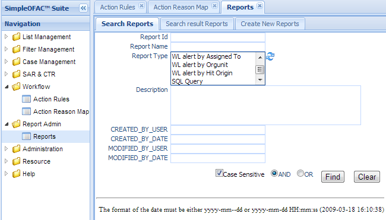
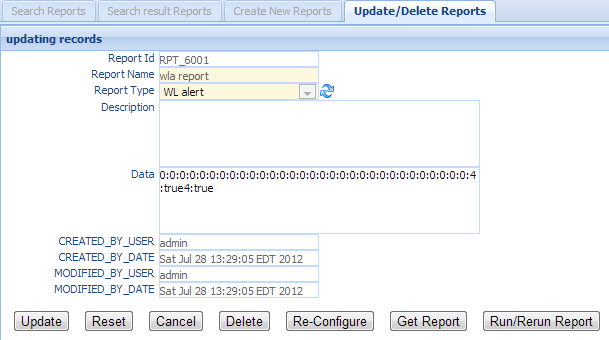
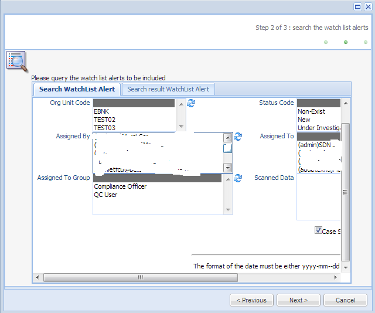
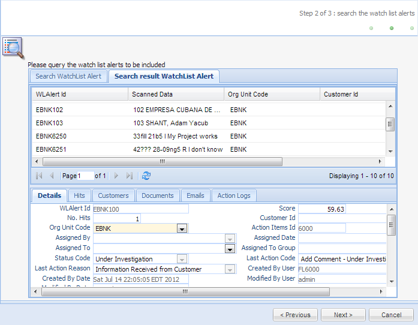
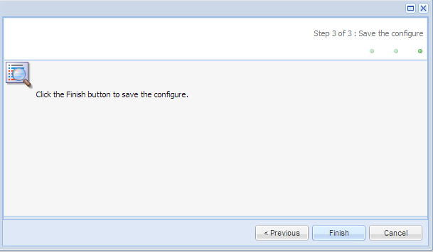

Report¶
SimpleEPT™ uses the popular Java reporting library JasperReports.
SimpleEPT™ has the following built-in reports: #. Compliance list alert detail report (WL alert). #. WL alert by Status. #. WL alert by Assigned To. #. WL alert by Organization Unit. #. WL alert by Hit Origin. #. SQL Query report. #. US regulatory reports, such as CTR, SAR, and EFile.
Note
SQL query type report will run the SQLscript and export the result as an Excel or PDF file. It requires some knowledge on our internal tables.
Click the Reports in the left navigation menu under Report Admin and a new Reports Tab folder will be created in the right panel. There are 3 sub-Tab folders: Search Reports, Search Result Reports and Create New Reports.
Search Reports¶
Search Criteria
| Field Name | Description |
|---|---|
| Report Id | This is the unique number for the Reports entry in the system . |
| Report Name | Name of the Reports. |
| Report Type | Select report type(s) in the dropdown list. |
| Org Unit Code | Select values from the dropdown list. |
| Description | The description of this report |
| CreatedByDate | Date and Time when this entry is created |
| CreatedByUser | User who create this entry. |
| ModifiedByDate | Last modified date and time. |
| ModifiedByUser | Last modified user. |
| AND | Select AND radio box if you want those criteria add together. |
| OR | Select OR radio box if you want to get the result if either criteria meet |
Functional buttons¶
- Find: – click Find button to search.
- Clear:– click Clear button to clear all the criteria.
Search Result Reports¶

The top part is the table which shows the list of the reports that meet the search criteria. The bottom part is the details of the selected entry.
Update/Delete Reports¶
Double Click the selected record in the table to modify this entry. A new Tab folder Update/Delete Reports will be added, as shown below.
Functional buttons¶
- Update: – make changes on the report and save and switch back to “Search result Reports” Tab. Some of the fields in this form are read only, like Report Id, created/modified user, and date. The configuration Data field is read only also; it can be modified via the Re-Configure button.
- Reset:– reset the data to its initial value and discard all the changes.
- Cancel:– Cancel this change and switch back to “Search result Reports” Tab.
- Delete:– Delete this entry. Then switch back to “Search result Reports” Tab.
- Re-Configure – Click this button to open a configure wizard to set up the configuration data, as shown below:
Click the Next Button to go to wizard step 2
It will show screens corresponding to the type of the report. For example, if the report type is WLA report, then it will show a watchlist alert search panel, allowing the user to select the watchlist alerts to be included in this report. It is pre-populated with the data in the Config Data field.
Set search criteria and then click the Find Button to get a list of watchlist alerts that meet the search criteria.
Click the Next button to go to wizard step 3: Save the configuration
- Click Finish to save the configuration into Configuration Data field.
- Click Cancel to discard those changes.
- Get Report – Click this button to download the report file if it exists. Otherwise it will generate the report first.
- Run/Rerun Report – Click this button to generate the report first and then download it.
Create New Reports¶
Select the “Create New Reports” Tab to create a new entry.

| Field Name | Description |
|---|---|
| Report Id | This is the unique number for the Reports entry in the system . |
| Report Name | Name of the Reports. |
| Report Type | Select report type(s) in the dropdown list. |
| Org Unit Code | Select values from the dropdown list. |
| Description | The description of this report |
| Data | Configuration data to define what watchlist alerts should be included in the report. User has to set the data value via Configure button. |
| CreatedByDate | Date and Time when this Reports entry is created. It is a read only field. |
| CreatedByUser | User who create this Reports entry. It is a read only field. |
| ModifiedByDate | Last modified date and time; It is a read only field. |
| ModifiedByUser | Last modified user; It is a read only field. |
Functional buttons¶
- Create: – Click the Create button to create a new Reports entry and switch to “Search result Reports” Tab. Report type and name are mandatory fields; if one of them is empty, an error message will appear. Data field must be set via Configure Button. If the Data field is empty, all the watchlist alerts will be included when the report is generated.
- Clear:– Click the Clear button to clear all the fields.
- Cancel:– Click the Cancel button to cancel the operation and switch back to the “Search result Reports” Tab.
- Configure –Click the Configure button to open a configure wizard to set up the configuration data. (see Re-Configure in Update/Delete Reports section Update/Delete Reports).